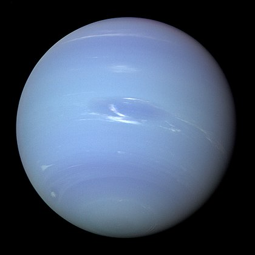

Der Neptun ist der achte und äußerste bekannte Planet unseres Sonnensystems. Er wurde 1846 aufgrund von Berechnungen aus Bahnstörungen des Uranus durch den französischen Mathematiker Urbain Le Verrier von dem deutschen Astronomen Johann Gottfried Galle entdeckt. Neptun ist durchschnittlich 4,5 Milliarden Kilometer von der Sonne entfernt. Von der Erde aus hat er einen scheinbaren Durchmesser von ca. 2 Winkelsekunden. Mit einem Durchmesser von knapp 50.000 Kilometern hat Neptun fast den vierfachen Erddurchmesser und das rund 58-fache Erdvolumen. Nach Jupiter, Saturn und Uranus ist Neptun der viertgrößte Planet des Sonnensystems.[1] Zusammen mit Uranus bildet Neptun die Untergruppe der Eisriesen. Neptun dominiert durch seine Größe die Außenzone des Planetensystems, was sich zum Beispiel an der Umlaufzeit einiger „Transneptune“ wie Pluto und der Plutino-Gruppe zeigt, die etwa das 1,5fache der Umlaufzeit von Neptun beträgt (eine 3:2-Bahnresonanz). Von den 14 bekannten Monden Neptuns ist Triton mit 2700 Kilometern Durchmesser der mit Abstand größte. Als einziger Planet des Sonnensystems ist Neptun von der Erde aus nicht mit bloßem Auge erkennbar. Seine Opposition war 2016 am 2. September und verlagert sich jährlich um etwa zwei Tage nach hinten.
 1 2 3 4 5 6 7 89